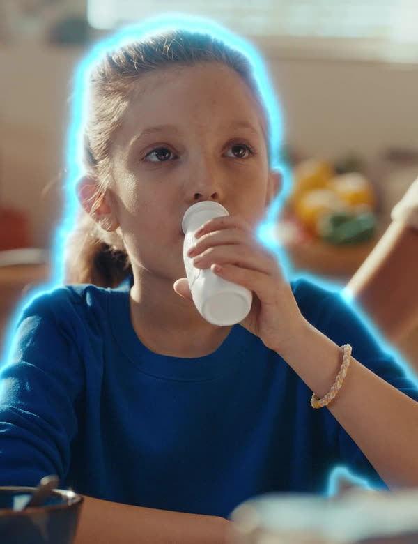
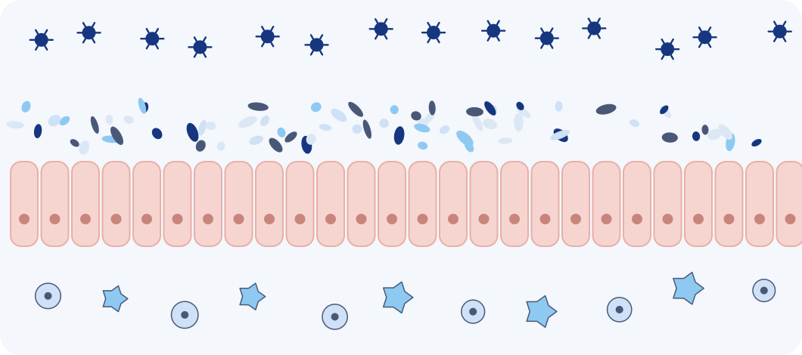
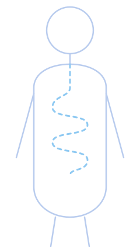
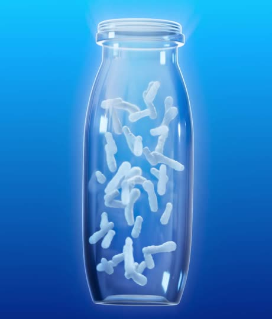

WINTER PROGRAM · UN RETO DE 30 DÍAS
Tus defensas también se entrenan
Activa el modo invierno para que el frío no te frene
Empieza por el día 1En colaboración con Actimel

CAMBIO DE HORA.
CAMBIO DE ARMARIO.
¿Y TUS DEFENSAS?
Cuando llega el frío, nos preparamos por fuera: sacamos los abrigos, rescatamos las bufandas y encendemos la calefacción. Pero… ¿qué pasa con nuestras defensas? Los cambios bruscos de tiempo favorecen la aparición de afecciones propias del invierno y ponen a prueba nuestro sistema inmunitario. Por eso, además de abrigarnos por fuera, también es importante cuidarnos por dentro.
POR QUÉ EN INVIERNO
¿Por qué en invierno es todavía más importante cuidarnos?
Con el frío cambian nuestras rutinas y nuestro entorno, y el organismo tiene que adaptarse. Estos son algunos de los factores que lo ponen a prueba.
Más horas bajo techo
Pasamos más tiempo en interiores, con las ventanas cerradas y más gente alrededor.
Aire frío y seco
El frío y la poca humedad resecan las mucosas de la nariz, que actúan como barrera.
Menos horas de luz
Los días más cortos reducen nuestra exposición al sol, una de las fuentes naturales de vitamina D, que contribuye al normal funcionamiento del sistema inmunitario.
ANTES DE EMPEZAR · 1 PREGUNTA
¿Dónde está el 70% de tu sistema inmunitario?
Elige una respuesta
CORRECTO
70%
del sistema inmunitario está en el intestino. Funciona como un filtro que deja pasar lo que el cuerpo necesita: esta barrera intestinal es nuestra primera línea de defensa.
POR QUÉ EL INTESTINO
La primera línea de defensa está donde menos miras
El intestino está recubierto por la barrera intestinal, que funciona como un filtro: deja pasar lo que el cuerpo necesita y frena lo que no. Así funciona, capa a capa.
Patógenos
Microbiota
Pared intestinal
Sistema inmunitario

Microbiota
Las bacterias que viven en el intestino forman la primera capa de la barrera intestinal. Cuando están en equilibrio, dificultan que se instalen microorganismos perjudiciales.
Barrera intestinal
Una capa de células muy unidas recubre la pared del intestino y decide qué pasa al organismo: deja pasar los nutrientes y frena lo que el cuerpo no necesita.
Sistema inmunitario
Debajo de la barrera se concentra buena parte de las células inmunitarias, que vigilan y responden cuando algo intenta atravesarla.
LO QUE DICE LA CIENCIA
El frío puede influir en el equilibrio de la microbiota intestinal y, con ella, en el funcionamiento de nuestras defensas
Según una revisión científica publicada en 2024 (referencia 1)
1. Zhou E, Zhang L, He L, et al. Cold Exposure, Gut Microbiota and Health Implications: A Narrative Review. The Science of the Total Environment. 2024;916:170060.
¿Por qué decimos que el intestino es la primera línea de defensa?
El intestino es mucho más que un órgano digestivo: en él se encuentra hasta el 70% de las células inmunitarias del organismo. Además, su pared actúa como una barrera que lucha para que solo pase lo que el cuerpo necesita, y la microbiota ayuda a mantener su equilibrio.
¿Qué hábitos ayudan a los niños a llegar mejor al invierno?
Una alimentación variada, dormir las horas adecuadas y moverse cada día ayudan a que sus defensas sean más resilientes. También conviene cuidar la higiene de manos, ventilar los espacios y mantener al día las vacunas recomendadas para cada edad.
Fuente: Asociación Española de Pediatría
EL RETO · 30 DÍAS, 5 FASES
TU PLAN EN 30 DÍAS
Qué pasa en tu organismo, semana a semana, cuando Actimel entra en la rutina. Detrás: 30 años de investigación y 145 publicaciones científicas en niños, adultos y personas mayores.

1 Llegada
El mapa marca en qué punto del viaje estás
GUÍA PRÁCTICA
EL MODO INVIERNO
NO VA DE
UN SOLO
GESTO
Descanso, actividad física y alimentación sostenidos en el tiempo: tres hábitos para toda la familia, con un dato para cada uno, a los que sumar un Actimel al día.
Dormir lo suficiente
Las horas cambian con la edad: entre 10 y 13 horas al día de los 3 a los 5 años, y entre 9 y 12 de los 6 a los 12.
Fuente: Asociación Española de Pediatría
Horarios regulares, también el fin de semana, y pantallas fuera una hora antes de dormir.
Moverse cada día
Los niños de entre 5 y 17 años deben realizar al menos 60 minutos diarios de actividad física, de intensidad moderada a vigorosa, principalmente aeróbica.
Fuente: Organización Mundial de la Salud (OMS)
Con el frío también: ir andando al colegio, el parque en las horas de sol o juegos activos en casa.
Comer variado
Al menos tres raciones de fruta y dos de verdura al día, y entre dos y tres raciones de lácteos, para los niños de 6 a 12 años.
Fuente: Agencia Española de Seguridad Alimentaria y Nutrición (AESAN)
Una mesa saludable debe tener frutas de temporada, verduras, legumbres y alimentos fermentados. Todo ello repartido durante la semana.
Un Actimel al día
20.000 millones de probióticos exclusivos con L. casei, y vitaminas D y B6.
En el desayuno, dentro de una alimentación variada y un estilo de vida saludable.
0 de 4 hábitos ya forman parte de la rutina
LO QUE PREGUNTAN LAS FAMILIAS
Preguntas frecuentes sobre las defensas en invierno
Respuestas breves a las dudas más habituales, con su fuente.
El frío no causa directamente los resfriados ni otras infecciones de invierno: las producen microorganismos patógenos, como virus y bacterias. Sin embargo, las temperaturas bajas sí pueden favorecer que aparezcan, ya que reducen la eficacia de la respuesta inmunitaria de las vías respiratorias. Además, cuando hace frío pasamos más tiempo en espacios cerrados y con menos ventilación, lo que facilita los contagios.
Salir de casa sin secarse el pelo no provoca resfriados: el cabello húmedo en sí no enferma. Para enfermar es necesaria la presencia de un microorganismo patógeno, como un virus o una bacteria. Lo que sí es cierto es que el clima invernal facilita su supervivencia y su propagación.
Su sistema inmunitario todavía está madurando y aún no ha estado en contacto con muchos de los microorganismos que circulan. Además, pasan muchas horas en aulas cerradas y en contacto estrecho con otros niños, lo que facilita los contagios.
Fuente: Asociación Española de Pediatría
Los probióticos son microorganismos vivos que, administrados en cantidades adecuadas, aportan un beneficio para la salud. Los prebióticos, en cambio, no son microorganismos: son componentes de algunos alimentos, como ciertos tipos de fibra, que sirven de alimento a las bacterias beneficiosas del intestino y favorecen su crecimiento.
Fuente: FAO, OMS e International Scientific Association for Probiotics and Prebiotics (ISAPP)
Actimel Kids Natural sin azúcares añadidos ni edulcorantes puede incorporarse a la alimentación de los bebés a partir del año de vida, coincidiendo con la introducción de los lácteos en su dieta. Como siempre, se recomienda seguir una alimentación variada y equilibrada, siguiendo las indicaciones del pediatra.

DENTRO DE CADA ACTIMEL
Un gesto pequeño con mucha ciencia detrás
20.000 Mprobióticos naturales exclusivos, con su cepa L. casei
D + B6vitaminas que viajan al resto del cuerpo
Calciofuente natural de calcio, necesario para el crecimiento y el desarrollo normales de los huesos en los niños
30 añosde investigación y 145 publicaciones científicas
Las vitaminas D y B6 contribuyen al normal funcionamiento del sistema inmunitario. El calcio es necesario para el crecimiento y el desarrollo normales de los huesos en los niños.
30 DÍAS, UN HÁBITO
EMPIEZA HOY
TU MODO
INVIERNO
Un Actimel al día durante 30 días, junto a los hábitos de siempre. El invierno se prepara desde dentro
Activa el modo inviernoTU PLAN, EN RESUMEN
- Días 1–3
- Llega al intestino
- Semana 1
- Empieza a entrenar tu inmunidad
- Semana 2
- Se activa la respuesta inmunitaria
- Semana 3
- Los beneficios se empiezan a notar
- Semana 4
- El hábito se consolida y tus defensas también